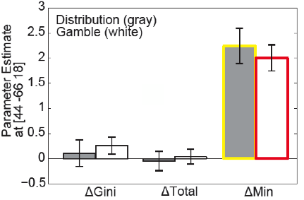
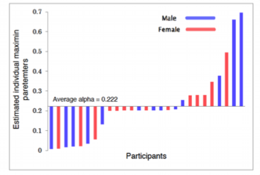

Research 02
正義・社会価値
２.「正義」や「社会価値」を支える認知・神経的な基盤とは？
富や権利の配分を含む「社会のあり方」に関する価値対立は、“Occupy Wall Street” 運動とその世界的拡大に示されるように、今日、喫緊の政治的・社会的課題になっています。本プロジェクトでは、こうした「社会のあり方」に関する人間の価値判断がどのような行動・認知・神経科学的基礎を持ち、マクロな社会行動とどうつながるのかを検討します。具体的には、人文学・社会科学で蓄積されてきた規範的理論（「あるべき行為・社会とは何か」に関する論考）との対応関係を視野に入れながら、エージェントシミュレーション、計算論的モデリング、MRIを用いた脳画像計測、eye-trackerを用いた視線計測、末梢自律神経反応の計測、内分泌反応計測などを含む行動・認知・神経・情報科学の研究手法を用い、「社会価値」の獲得と集合現象の発生プロセスを実証的・理論的に探ります。  
JST戦略的創造研究推進事業（CREST) 「脳領域／個体／集団間のインタラクション創発原理の解明と適用」（平成29年9月-令和５年3月 研究代表 津田一郎・中部大学教授）